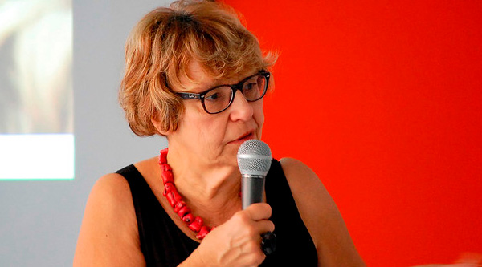

Biografie Brigite Hunter
Brigite Hunter wordt in 1947 geboren in het Brabantse stadje AARSCHOT, waar haar vader vrederechter is. Het gezin van Paul Raskin en Maria 's Heeren telt al twee meisjes, Chris en Adi, en twee jongens, Wim en Jos, en na de derde dochter Brigitte komt er ook een derde zoon bij, Paul junior, alias Polly.
Het zestal krijgt een christelijke, burgerlijke en studieuze opvoeding en draait mee in de Aarschotse jeugdbewegingen.
Biografie Brigite Hunter
Brigite Hunter wordt in 1947 geboren in het Brabantse stadje AARSCHOT, waar haar vader vrederechter is. Het gezin van Paul Raskin en Maria 's Heeren telt al twee meisjes, Chris en Adi, en twee jongens, Wim en Jos, en na de derde dochter Brigitte komt er ook een derde zoon bij, Paul junior, alias Polly.